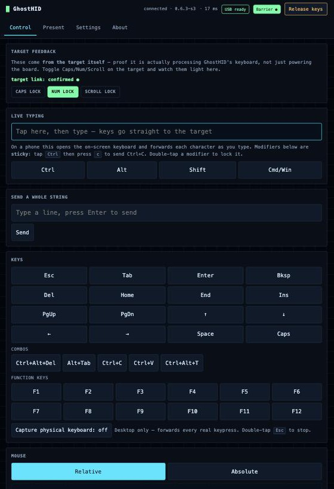
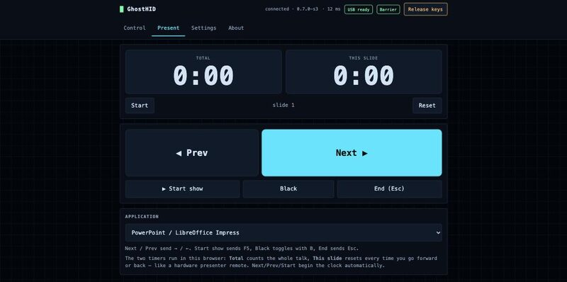
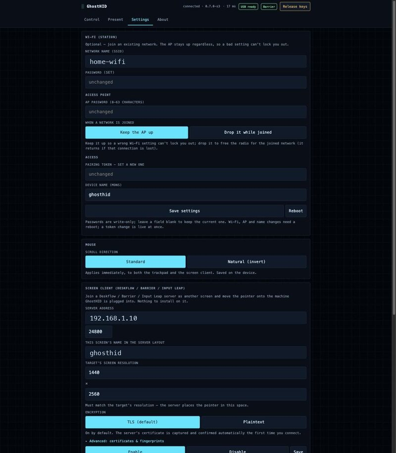
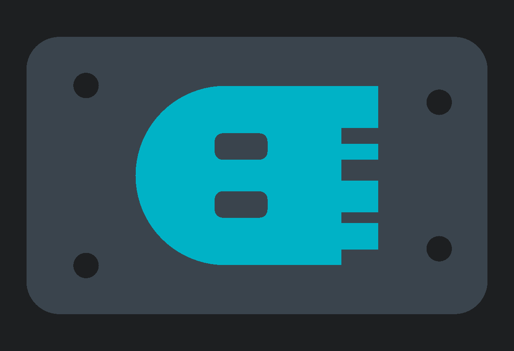
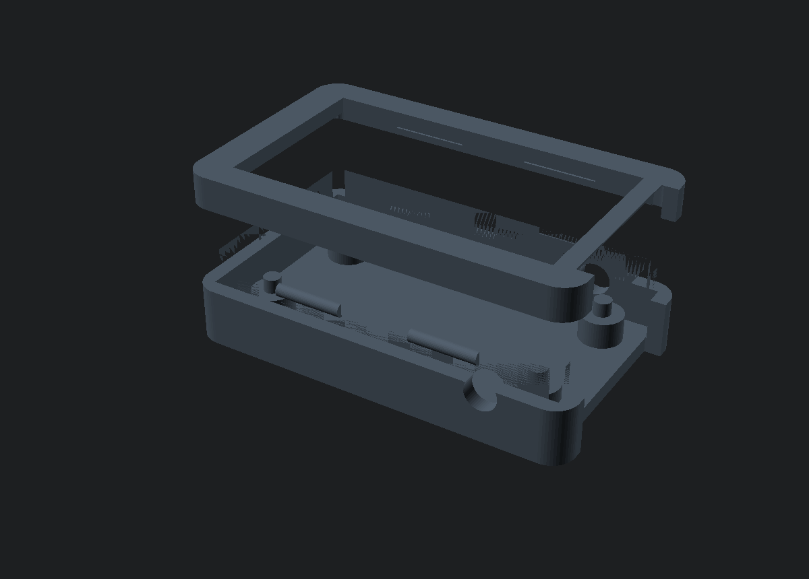

A thumb-sized USB stick that becomes a real keyboard and mouse for any computer, driven from your phone, your browser, or your desktop's screen edge.
Plug it into the target. Control it over Wi-Fi. There is nothing to install on the machine you're controlling. To its USB port, GhostHID simply is a keyboard and mouse.
The computer is sure of it. To its USB port, GhostHID is a plain keyboard and mouse, no driver or agent required. What it can't tell is that the keystrokes are arriving over Wi-Fi: from the web app on your phone, or from your own desktop, a screen-edge away.
🔒 Screen sessions run over mutual TLS. The server's certificate is captured and confirmed on first connect, nothing to paste. Encryption included.
Built for the moments you can't (or shouldn't) install anything on the target: a headless box, a locked-down machine, a KVM, a friend's PC, the podium laptop.
A phone-friendly web app: live typing, every key and combo, a trackpad, sticky modifiers. No app to install on either end.
Join a Deskflow / Barrier / Input Leap layout as a screen and move your pointer straight onto the target. Nothing runs on the target.
Toggle a lock key (Caps / Num / Scroll) and the host echoes its LED state back on the screen and in the web UI: a loopback that proves your keystrokes are really reaching the target.
Next / back / black-screen with two timers (total talk and per-slide), like a hardware clicker from your phone. Presets for Slides, Keynote, PowerPoint.
Volume, mute, play/pause, next/prev, brightness, plus sleep, wake and power, as a full consumer-control collection.
A 1.47" LCD shows a Wi-Fi join QR, the IP and live status; an RGB LED reads its state across the room.
Served straight off the device. Open it from anything with a browser. No store, no sign-in.



It types into any computer, so it's built like something you'd trust with the keys. Every line here is something you can check in the source.
For a device you deploy and walk away from. One command locks it, and the pairing token stops being a master key. Undoing it takes physical hands on the board, not just the token or the network.
Screen sessions run over mutual TLS. The server's certificate is captured and confirmed on first connect. No keys to paste, and no silent plaintext fallback.
Controllers prove they know the pairing token with a challenge-response handshake, so the token itself never crosses the wire. From there, every keystroke and mouse move is carried in a signed, counted envelope, so input can't be forged, tampered with, or replayed.
Every board generates its own random pairing token and access-point password on first boot. There's nothing to look up and reuse across devices.
Tokens are checked in constant time, with an escalating lockout after repeated failures, on the web control channel and the firmware-update endpoint alike.
If a controller drops (lost Wi-Fi, a closed tab), the device releases every held key and button on the target. Guaranteed by the layering, not left to chance.
No cloud, no account, no telemetry. The web app is served straight off the device; nothing it does leaves your LAN.
A generic USB keyboard ID so it doesn't trip endpoint security, plus MIT-licensed firmware, web UI and hardware you can read end to end.
Releases are signed with minisign so you can verify a build before it ever touches a machine, and the toolchain and every library are pinned, so a given commit always compiles to the same bytes.
GhostHID is a keyboard and mouse, not a clipboard peer. It opts out of clipboard sharing at the protocol level, so whatever you copy on your computer is never sent to the device. Nothing to leak, nothing to buffer.
It runs on the Waveshare ESP32-S3-LCD-1.47, the one board GhostHID supports today: dual-core, native USB, a colour screen and an RGB LED, in a board the size of a chunky flash drive. It's the only build ghosthid.app flashes. The repo ships a parametric case with the ghost as a two-colour inlay.


Each layer knows only its neighbour. The network never touches USB; the HID layer never learns where a command came from, so a stuck key is impossible by construction.
A keystroke or a pointer move, as JSON or the Synergy protocol.
Validates, rate-limits, authenticates. The only place policy lives.
The one layer that speaks USB. Holds the state that "release everything" undoes.
Four steps to your first keystroke, then two ways to make it yours. No accounts, no cloud, and no software on the machine you're driving — the only thing you install is the firmware, and that happens in your browser.
Plug a Waveshare ESP32-S3-LCD-1.47 into your own computer and run the browser flasher. It checks the chip, verifies the firmware signature, and writes it over USB.
Open the flasher →Unplug it and put it in the USB port of the machine you want to drive. That machine sees a keyboard, a mouse and an absolute pointer — no driver, no agent, no network of its own.
On a fresh flash GhostHID brings up its own access point. The on-board LCD shows a QR code: scan it with your phone to join, or pick the network by hand.
The screen shows the address. Open it in any browser for live typing, a key pad, sticky modifiers, a trackpad, presenter and media keys. Built for touch, so a phone works as well as a laptop.
See the screens →The setup AP is fine for a one-off, but most people move GhostHID onto their Wi-Fi and set a pairing token. Do it from the web UI, or over the USB cable — whichever you can reach.
Join the device's access point — scan the QR code on the LCD, or pick the network by hand — then open it in a browser and use Settings: your Wi-Fi, a pairing token, the AP password, the device name.
The suffix comes from the board's MAC, so every stick is its own network. Change that password.
No phone, no radio, nothing to join: open GhostHID's USB serial port at 115200 from the machine it's plugged into and type help. Useful for a headless setup, or to fix a Wi-Fi typo without touching the AP.
Also does kvm (Deskflow), show, seal and reset. Once a token is set, changing security settings needs unlock <token> first — and a sealed device has no serial port at all.
Plug the supported board, a Waveshare ESP32-S3-LCD-1.47, into a USB port and flash it in your browser, or grab the firmware and the printable case directly.
Web Serial. Nothing to install. Plug in over USB, pick the port, done.
Open the flasher →The build for OTA updates from the web UI, or manual flashing.
Checking signature… Download .bin →All three parts in one file. Pick a filament for the case and the ghost.
Download .3mf →Firmware, web UI and hardware are MIT-licensed and live in one repo. Fork it, reflash it, remix the case.
ESP32-S3 · MIT licensed · no cloud, no account, no telemetry